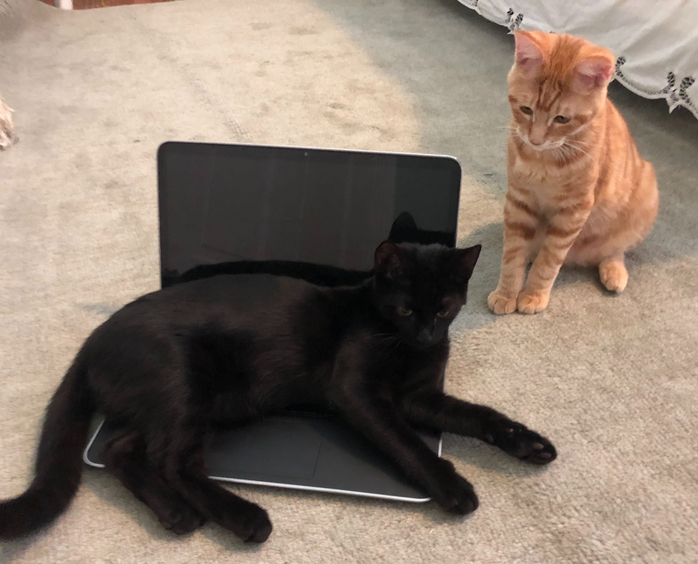
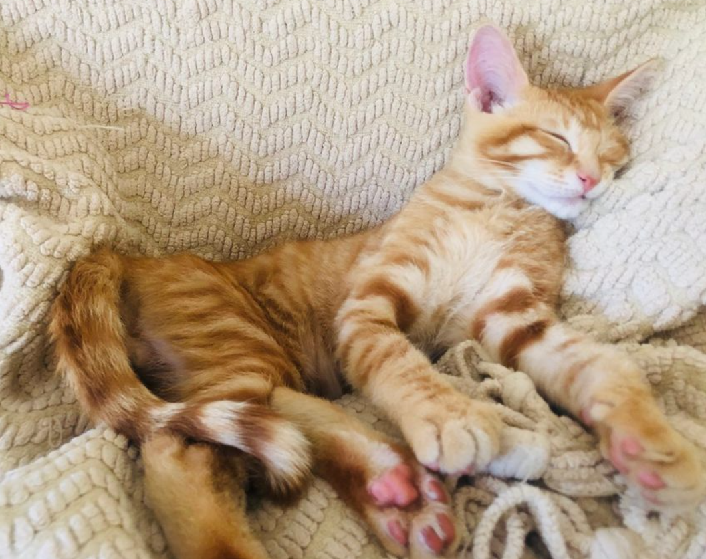
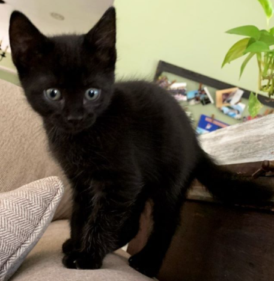
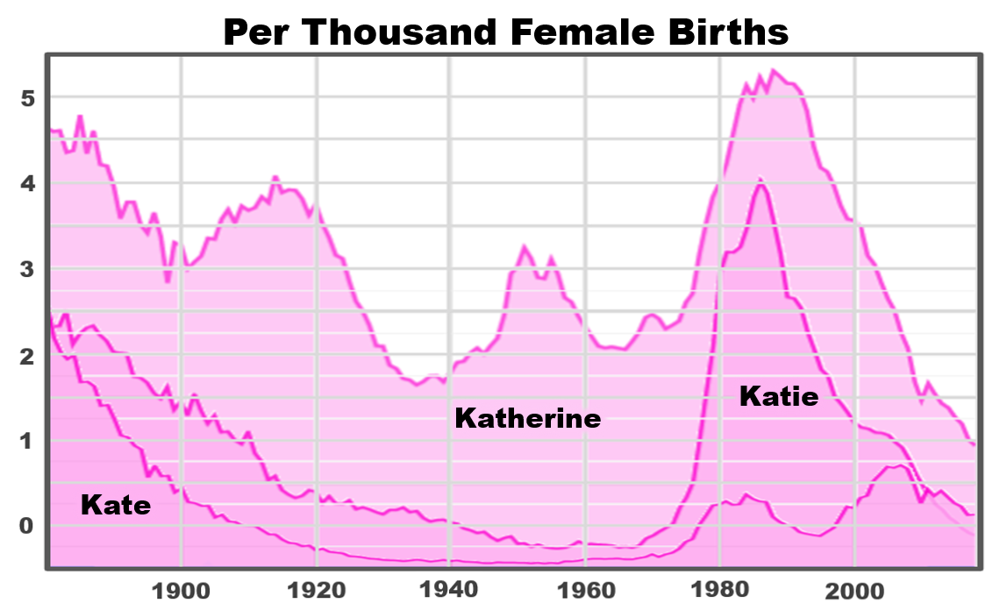
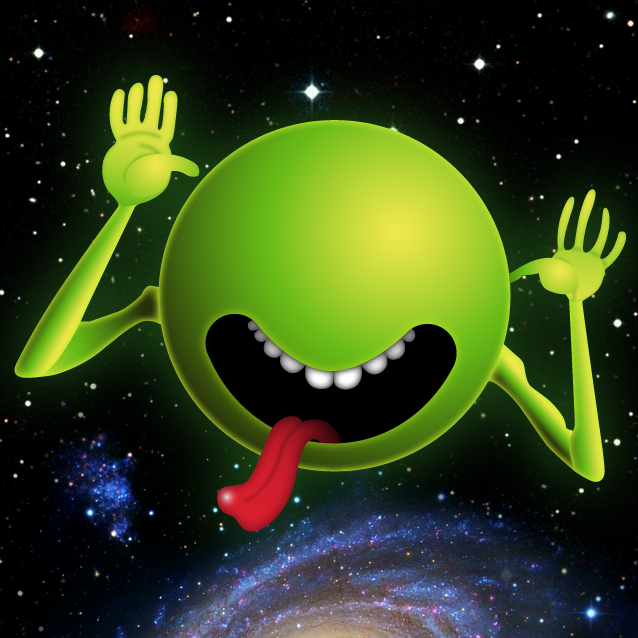

Hello! I'm Katherine "Kat" Cottrell. I attend Duke University as a computer science
student. I am set to graduate with my bachelor of science by Spring 2022. I
have special interest in data science, data visualization, and image analysis.
In my spare time outide of coding, I enjoy reading, creating visual art, and
spending quality time with my two cats.

My two most senior advisors
These are my cats, Pumpkin and Spooky.

Pumpkin
This is Pumpkin. After years of working in industry as a senior engineer at
Google, he has returned to academia to pursue his passion for parallel
computation and memory systems. Pumpkin also volunteers his time leading
a thinktank for global gender equality in STEM.

Spooky
This is Spookiloo, Spooky to close friends and colleagues.
Spooky is a Rhodes Scholar and a former college
football star. After a sports injury forced him to retire from football,
Spooky returned to school for an advanced degree in electrical engineering and
is now a tenured faculty member at the Institute for Advanced Study's school
of mathematics researching space-efficient local computation algorithms.

What is your name?
My legal name is Katherine Cottrell, but I often go by Kat, and either Kat
or Katherine is great.

What is this? Are you taunting me?
Absolutely not! This is my profile image on many platforms.
(I avoid posting images of myself for digital privacy reasons.) It is
is a small green alien widely known as the "Cosmic Cutie" from the cover
art of one of my favorite book series,
The Hitchhiker's Guide to the Galaxy.
Fun fact: While I am myself a fan of the Cosmic Cutie, H2G2 author
Douglas Adams was decidedly not, quoted as saying: "I hate the little
green blob and have spent years locked in arguments with my publishers with me trying
to get rid of the obscene little thing." Sorry, Douglas!